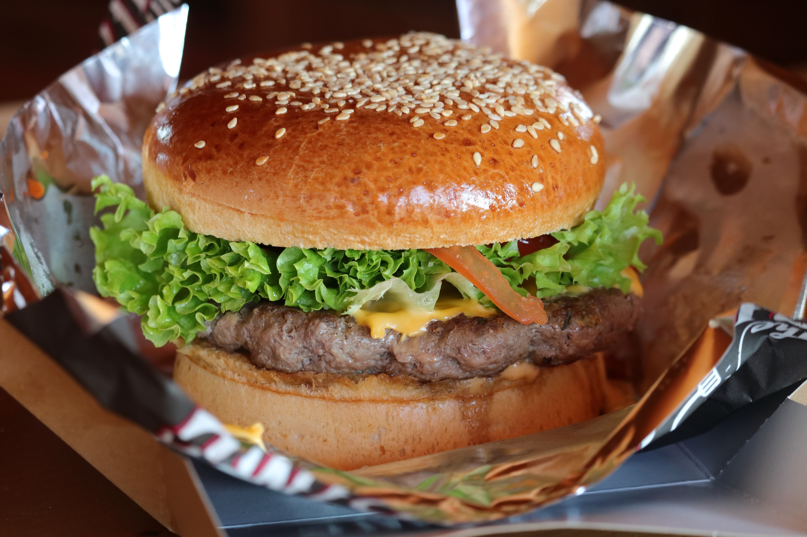

Hambuger

Description
No more dry, lackluster hamburgers. These are juicy, and spices can
be easily added or changed to suit anyone's taste. If you find the
meat mixture too mushy, just add more bread crumbs until it forms
patties that hold their shape.
- 2 pounds ground beef
- cup dry bread crumbs
- 2 tablespoons evaporated milk
- 2 egg, beaten
- wash your hands
-
mix the ground beef, bread crumbs, evaporated milk, and egg
together
-
form the mixture into patties and place them on a baking sheet
-
bake for 8-10 minutes or until the hamburgers are cooked through
Back Home